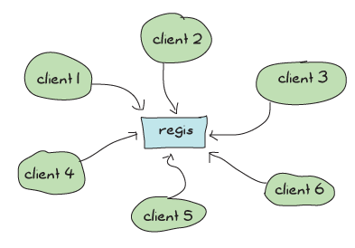
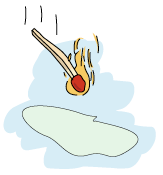
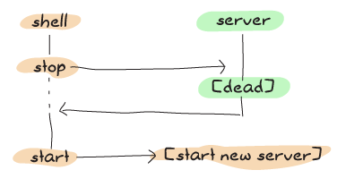
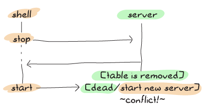
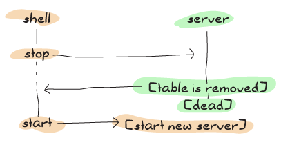

Bears, ETS, Beets

Something we've been doing time and time again has been to implement some kind of storage device as a process. We've done fridges to store things, built regis to register processes, seen key/value stores, etc. If we were programmers doing object-oriented design, we would be having a bunch of singletons floating around, and special storage classes and whatnot. In fact, wrapping data structures like dicts and gb_trees in processes is a bit like that.
Holding data structures in a process is actually fine for a lot of cases — whenever we actually need that data to do some task within the process, as internal state, and so on. We've had plenty of valid uses and we shouldn't change that. However, there is one case where it is possibly not the best choice: when the process holds a data structure for the sake of sharing it with other processes and little more.
One of the applications we've written is guilty of that. Can you guess which? Of course you can; I've mentioned it at the end of last chapter: regis needs to be rewritten. It's not that it doesn't work or can't do its job well, but because it acts as a gateway to share data with potentially a lot of other processes, there is an architectural problem with it.
See, regis is this central application to do messaging in Process Quest (and anything else that would use it), and pretty much every message going to a named process has to go through it. This means that even though we took great care to make our applications very concurrent with independent actors and made sure our supervision structure was right to scale up, all of our operations will depend on a central regis process that will need to answer messages one by one:
If we have a lot of message passing going on, regis risks getting busier and busier, and if the demand is high enough our whole system will become sequential and slow. That's pretty bad.
Note: we have no direct proof that regis is a bottleneck within Process Quest — In fact, Process Quest does very little messaging compared to many other applications in the wild. If we were using regis for something that requires a lot more messaging and lookups, then the problems would be more apparent.
The few ways we'd have to get around that would be to either split regis into subprocesses to make lookups faster by sharding the data, or find a way to store the data in some database that will allow for parallel and concurrent access of the data. While the first way to do it would be very interesting to explore, we'll go through an easier path by doing the latter.
Erlang has something called ETS (Erlang Term Storage) tables. ETS tables are an efficient in-memory database included with the Erlang virtual machine. It sits in a part of the virtual machine where destructive updates are allowed and where garbage collection dares not approach. They're generally fast, and a pretty easy way for Erlang programmers to optimize some of their code when parts of it get too slow.
ETS tables allow limited concurrency in reads and writes (much better than none at all for a process' mailbox) in a way that could let us optimize away a lot of the pain.
Don't Drink Too Much Kool-Aid:
While ETS tables are a nice way to optimize, they should still be used with some care. By default, the VM is limited to 1400 ETS tables. While it is possible to change that number (erl -env ERL_MAX_ETS_TABLES Number), this default low level is a good sign that you should try to avoid having one table per process in general
But before we rewrite regis to use ETS, we should try to understand a bit of ETS' principles beforehand.
The Concepts of ETS
ETS tables are implemented as BIFs in the ets module. The main design objectives ETS had was to provide a way to store large amounts of data in Erlang with constant access time (functional data structures usually tend to flirt with logarithmic access time) and to have such storage look as if it were implemented as processes in order to keep their use simple and idiomatic.
Note: having tables look like processes doesn't mean that you can spawn them or link to them, but that they can respect semantics of nothing-shared, wrapping calls behind functional interfaces, having them handle any native data type for Erlang, and having the possibility to give them names (in a separate registry), etc.
All ETS tables natively store Erlang tuples containing whatever you want, where one of the tuple elements will act as a primary key that you use to sort things. That is to say, having tuples of people of the form {Name, Age, PhoneNumber, Email} will let you have a table that looks like:
{Name, Age, PhoneNumber, Email},
{Name, Age, PhoneNumber, Email},
{Name, Age, PhoneNumber, Email},
{Name, Age, PhoneNumber, Email},
{Name, Age, PhoneNumber, Email},
...
So if we say that we want to have the table's index be the e-mail addresses, we can do this by telling ETS to set the key position to 4 (we'll see how to do this in a bit, when we get to actual ETS function calls). Once you've decided on a key, you can choose different ways to store data into tables:
- set
- A set table will tell you that each key instance must be unique. There can be no duplicate e-mail in the database above. Sets are great when you need to use a standard key/value store with constant time access.
- ordered_set
- There can still only be one key instance per table, but
ordered_setadds a few other interesting properties. The first is that elements in anordered_settable will be ordered (who would have thought?!). The first element of the table is the smallest one, and the last element is the largest one. If you traverse a table iteratively (jumping to the next element over and over again), the values should be increasing, which is not necessarily true ofsettables. Ordered set tables are great when you frequently need to operate on ranges (I want entries 12 to 50 !). They will, however, have the downside of being slower in their access time (O(log N)where N is the number of objects stored). - bag
- A bag table can have multiple entries with the same key, as long as the tuples themselves are different. This means that the table can have
{key, some, values}and{key, other, values}inside of it without a problem, which would be impossible with sets (they have the same key). However, you couldn't have{key, some, values}twice in the table as they would be entirely identical. - duplicate_bag
- The tables of this type work like
bagtables, with the exception that they do allow entirely identical tuples to be held multiple time within the same table.
Note: ordered_set tables will see the values 1 and 1.0 as identical for all operations. Other tables will see them as different.
The last general concept to learn about is that ETS tables will have the concept of a controlling process, much like sockets do. When a process calls a function that starts a new ETS table, that process is the owner of the table.
By default, only the owner of the table can write to it, but everyone can read from it. This is known as the protected level of permissions. You can also choose to set the permissions to public, where everyone can read and write, or private, where only the owner can read or write.

The concept of table ownership goes a bit further. The ETS table is intimately linked to the process. If the process dies, the table disappears (and so does all of its content). However, the table can be given away, much like we did with sockets and their controlling processes, or a heir can be determined so that if the owner process dies, the table is automatically given away to the heir process.
ETS Phone Home
To start an ETS table, the function ets:new/2 has to be called. The function takes the argument Name and then a list of options. In return, what you get is a unique identifier necessary to use the table, comparable to a Pid for processes. The options can be any of these:
Type = set | ordered_set | bag | duplicate_bag- Sets the type of table you want to have, as described in the previous section. The default value is
set. Access = private | protected | public- Lets us set the permissions on the table as described earlier. The default option is
protected. named_table- Funnily enough, if you call
ets:new(some_name, []), you'll be starting a protected set table, without a name. For the name to be used as a way to contact a table (and to be made unique), the optionnamed_tablehas to be passed to the function. Otherwise, the name of the table will purely be for documentation purposes and will appear in functions such asets:i(), which print information about all ETS tables in the system. {keypos, Position}- As you may (and should) recall, ETS tables work by storing tuples. The Position parameter holds an integer from 1 to N telling which of each tuple's element shall act as the primary key of the database table. The default key position is set to 1. This means you have to be careful if you're using records as each record's first element is always going to be the record's name (remember what they look like in their tuple form). If you want to use any field as the key, use
{keypos, #RecordName.FieldName}, as it will return the position of FieldName within the record's tuple representation. {heir, Pid, Data} | {heir, none}- As mentioned in the previous section, ETS tables have a process that acts as their parent. If the process dies, the table disappears. If the data attached to a table is something you might want to keep alive, then defining a heir can be useful. If the process attached to a table dies, the heir receives a message saying
{'ETS-TRANSFER', TableId, FromPid, Data}', where Data is the element passed when the option was first defined. The table is automatically inherited by the heir. By default, no heir is defined. It is possible to define or change a heir at a later point in time by callingets:setopts(Table, {heir, Pid, Data})orets:setopts(Table, {heir, none}). If you simply want to give the table away, callets:give_away/3. {read_concurrency, true | false}- This is an option to optimize the table for read concurrency. Setting this option to true means that reads become way cheaper to do, but then make switching to writes a lot more expensive. Basically, this option should be enabled when you do a lot of reading and little writing and need an extra kick of performance. If you do some reading, some writing and they are interleaved, using this option might even hurt performance.
{write_concurrency, true | false}- Usually, writing to a table will lock the whole thing and nobody else can access it, either for reading or writing to it, until the write is done. Setting this option to 'true' lets both reads and writes be done concurrently, without affecting the ACID properties of ETS. Doing this, however, will reduce the performance of sequential writes by a single process and also the capacity of concurrent reads. You can combine this option with 'read_concurrency' when both writes and reads come in large bursts.
compressed- Using this option will allow the data in the table to be compressed for most fields, but not the primary key. This comes at the cost of performance when it comes to inspecting entire elements of the table, as we will see with the next functions.
Then, the opposite of table creation is table destruction. For that one, all that's needed is to call ets:delete(Table) where Table is either a table id or the name of a named table. If you want to delete a single entry from the table, a very similar function call is required: ets:delete(Table, Key).
Two more functions are required for very basic table handling: insert(Table, ObjectOrObjects) and lookup(Table, Key). In the case of insert/2, ObjectOrObjects can be either a single tuple or a list of tuples to insert:
1> ets:new(ingredients, [set, named_table]).
ingredients
2> ets:insert(ingredients, {bacon, great}).
true
3> ets:lookup(ingredients, bacon).
[{bacon,great}]
4> ets:insert(ingredients, [{bacon, awesome}, {cabbage, alright}]).
true
5> ets:lookup(ingredients, bacon).
[{bacon,awesome}]
6> ets:lookup(ingredients, cabbage).
[{cabbage,alright}]
7> ets:delete(ingredients, cabbage).
true
8> ets:lookup(ingredients, cabbage).
[]
You'll notice that the lookup function returns a list. It will do that for all types of tables, even though set-based tables will always return at most one item. It just means that you should be able to use the lookup function in a generic way even when you use bags or duplicate bags (which may return many values for a single key).
Another thing that takes place in the snippet above is that inserting the same key twice overwrites it. This will always happen in sets and ordered sets, but not in bags or duplicate bags. If you want to avoid this, the function ets:insert_new/2 might be what you want, as it will only insert elements if they are not in the table already.
Note: The tuples do not have to all be of the same size in an ETS table, although it should be seen as good practice to do so. It is however necessary that the tuple is at least of the same size (or greater) than whatever the key position is.
There's another lookup function available if you need to only fetch part of a tuple. The function is lookup_element(TableID, Key, PositionToReturn) and it will either return the element that matched (or a list of them if there is more than one with a bag or duplicate bag table). If the element isn't there, the function errors out with badarg as a reason.
In any case let's try again with a bag:
9> TabId = ets:new(ingredients, [bag]).
16401
10> ets:insert(TabId, {bacon, delicious}).
true
11> ets:insert(TabId, {bacon, fat}).
true
12> ets:insert(TabId, {bacon, fat}).
true
13> ets:lookup(TabId, bacon).
[{bacon,delicious},{bacon,fat}]
As this is a bag, {bacon, fat} is only there once even though we inserted twice, but you can see that we can still have more than one 'bacon' entry. The other thing to look at here is that without passing in the named_table option, we have to use the TableId to use the table.
Note: if at any point while copying these examples your shell crashes, the tables are going to disappear as their parent process (the shell) has disappeared.
The last basic operations we can make use of will be about traversing tables one by one. If you're paying attention, ordered_set tables are the best fit for this:
14> ets:new(ingredients, [ordered_set, named_table]).
ingredients
15> ets:insert(ingredients, [{ketchup, "not much"}, {mustard, "a lot"}, {cheese, "yes", "goat"}, {patty, "moose"}, {onions, "a lot", "caramelized"}]).
true
16> Res1 = ets:first(ingredients).
cheese
17> Res2 = ets:next(ingredients, Res1).
ketchup
18> Res3 = ets:next(ingredients, Res2).
mustard
19> ets:last(ingredients).
patty
20> ets:prev(ingredients, ets:last(ingredients)).
onions
As you can see, elements are now in sorting order, and they can be accessed one after the other, both forwards and backwards. Oh yeah, and then we need to see what happens in boundary conditions:
21> ets:next(ingredients, ets:last(ingredients)). '$end_of_table' 22> ets:prev(ingredients, ets:first(ingredients)). '$end_of_table'
When you see atoms starting with a $, you should know that they're some special value (chosen by convention) by the OTP team telling you about something. Whenever you're trying to iterate outside of the table, you'll see these $end_of_table atoms.
So we know how to use ETS as a very basic key-value store. There are more advanced uses now, when we need more than just matching on keys.
Meeting Your Match
There are plenty of functions to be used with ETS when it comes to finding records from more special mechanisms.
When we think about it, the best way to select things would be with pattern matching, right? The ideal scenario would be to be able to somehow store a pattern to match on within a variable (or as a data structure), pass that to some ETS function and let the said function do its thing.
This is called higher order pattern matching and sadly, it is not available in Erlang. In fact, very few languages have it. Instead, Erlang has some kind of sublanguage that Erlang programmers have agreed to that is being used to describe pattern matching as a bunch of regular data structures.
This notation is based on tuples to fit nicely with ETS. It simply lets you specify variables (regular and "don't care" variables), that can be mixed with the tuples to do pattern matching. Variables are written as '$0', '$1', '$2', and so on (the number has no importance except in how you'll get the results) for regular variables. The "don't care" variable can be written as '_'. All these atoms can take form in a tuple like:
{items, '$3', '$1', '_', '$3'}
This is roughly equivalent to saying {items, C, A, _, C} with regular pattern matching. As such, you can guess that the first element needs to be the atom items, that the second and fifth slots of the tuple need to be identical, etc.
To make use of this notation in a more practical setting, two functions are available: match/2 and match_object/2 (there are match/3 and match_object/3 available as well, but their use is outside the scope of this chapter and readers are encouraged to check the docs for details.) The former will return the variables of the pattern, while the later will return the whole entry that matched the pattern.
1> ets:new(table, [named_table, bag]).
table
2> ets:insert(table, [{items, a, b, c, d}, {items, a, b, c, a}, {cat, brown, soft, loveable, selfish}, {friends, [jenn,jeff,etc]}, {items, 1, 2, 3, 1}]).
true
3> ets:match(table, {items, '$1', '$2', '_', '$1'}).
[[a,b],[1,2]]
4> ets:match(table, {items, '$114', '$212', '_', '$6'}).
[[d,a,b],[a,a,b],[1,1,2]]
5> ets:match_object(table, {items, '$1', '$2', '_', '$1'}).
[{items,a,b,c,a},{items,1,2,3,1}]
6> ets:delete(table).
true
The nice thing about match/2-3 as a function is that it only returns what is strictly necessary to be returned. This is useful because as mentioned earlier, ETS tables are following the nothing-shared ideals. If you have very large records, only copying the necessary fields might be a good thing to do. Anyway, you'll also notice that while the numbers in variables have no explicit meaning, their order is important. In the final list of values returned, the value bound to $114 will always come after the values bound to $6 by the pattern. If nothing matches, empty lists are returned.
It is also possible you might want to delete entries based on such a pattern match. In these cases, the function ets:match_delete(Table, Pattern) is what you want.

This is all fine and lets us put any kind of value to do basic pattern matching in a weird way. It would be pretty neat if it were possible to have things like comparisons and ranges, explicit ways to format the output (maybe lists isn't what we want), and so on. Oh wait, you can!
You Have Been Selected
This is when we get something more equivalent to true function heads-level pattern matching, including very simple guards. If you've ever used a SQL database before, you might have seen ways to do queries where you compare elements that are greater, equal, smaller, etc. than other elements. This is the kind of good stuff we want here.
The people behind Erlang thus took the syntax we've seen for matches and augmented it in crazy ways until it was powerful enough. Sadly, they also made it unreadable. Here's what it can look like:
[{{'$1','$2',<<1>>,'$3','$4'},
[{'andalso',{'>','$4',150},{'<','$4',500}},
{'orelse',{'==','$2',meat},{'==','$2',dairy}}],
['$1']},
{{'$1','$2',<<1>>,'$3','$4'},
[{'<','$3',4.0},{is_float,'$3'}],
['$1']}]
This is pretty ugly, not the data structure you would want your children to look like. Believe it or not, we'll learn how to write these things called match specifications. Not under that form, no, that would be a bit too hard for no reason. We'll still learn how to read them though! Here's what it looks like a bit from a higher level view:
[{InitialPattern1, Guards1, ReturnedValue1},
{InitialPattern2, Guards2, ReturnedValue2}].
Or from a yet higher view:
[Clause1, Clause2]
So yeah, things like that represent, roughly, the pattern in a function head, then the guards, then the body of a function. The format is still limited to '$N' variables for the initial pattern, exactly the same to what it was for match functions. The new sections are the guard patterns, allowing to do something quite similar to regular guards. If we look closely to the guard [{'<','$3',4.0},{is_float,'$3'}], we can see that it is quite similar to ... when Var < 4.0, is_float(Var) -> ... as a guard.
The next guard, more complex this time, is:
[{'andalso',{'>','$4',150},{'<','$4',500}},
{'orelse',{'==','$2',meat},{'==','$2',dairy}}]
Translating it gives us a guard that looks like ... when Var4 > 150 andalso Var4 < 500, Var2 == meat orelse Var2 == dairy -> .... Got it?
Each operator or guard function works with a prefix syntax, meaning that we use the order {FunctionOrOperator, Arg1, ..., ArgN}. So is_list(X) becomes {is_list, '$1'}, X andalso Y becomes {'andalso', X, Y}, and so on. Reserved keywords such as andalso, orelse and operators like == need to be put into atoms so the Erlang parser won't choke on them.
The last section of the pattern is what you want to return. Just put the variables you need in there. If you want to return the full input of the match specification, use the variable '$_' to do so. A full specification of match specifications can be found in the Erlang Documentation.
As I said before, we won't learn how to write patterns that way, there's something nicer to do it. ETS comes with what is called a parse transform. Parse transforms are an undocumented (thus not supported by the OTP team) way of accessing the Erlang parse tree halfway through the compiling phase. They let ballsy Erlang programmers transform the code in a module to a new alternative form. Parse transforms can be pretty much anything and change existing Erlang code to almost anything else, as long as it doesn't change the language's syntax or its tokens.
The parse transform coming with ETS needs to be enabled manually for each module that needs it. The way to do it in a module is as follows:
-module(SomeModule).
-include_lib("stdlib/include/ms_transform.hrl").
...
some_function() ->
ets:fun2ms(fun(X) when X > 4 -> X end).
The line -include_lib("stdlib/include/ms_transform.hrl"). contains some special code that will override the meaning of ets:fun2ms(SomeLiteralFun) whenever it's being used in a module. Rather than being a higher order function, the parse transform will analyse what is in the fun (the pattern, the guards and the return value), remove the function call to ets:fun2ms/1, and replace it all with an actual match specification. Weird, huh? The best is that because this happens at compile time, there is no overhead to using this way of doing things.
We can try it in the shell, without the include file this time:
1> ets:fun2ms(fun(X) -> X end).
[{'$1',[],['$1']}]
2> ets:fun2ms(fun({X,Y}) -> X+Y end).
[{{'$1','$2'},[],[{'+','$1','$2'}]}]
3> ets:fun2ms(fun({X,Y}) when X < Y -> X+Y end).
[{{'$1','$2'},[{'<','$1','$2'}],[{'+','$1','$2'}]}]
4> ets:fun2ms(fun({X,Y}) when X < Y, X rem 2 == 0 -> X+Y end).
[{{'$1','$2'},
[{'<','$1','$2'},{'==',{'rem','$1',2},0}],
[{'+','$1','$2'}]}]
5> ets:fun2ms(fun({X,Y}) when X < Y, X rem 2 == 0; Y == 0 -> X end).
[{{'$1','$2'},
[{'<','$1','$2'},{'==',{'rem','$1',2},0}],
['$1']},
{{'$1','$2'},[{'==','$2',0}],['$1']}]
All of these! They are written so easily now! And of course the funs are much simpler to read. How about that complex example from the beginning of the section? Here's what it would be like as a fun:
6> ets:fun2ms(fun({Food, Type, <<1>>, Price, Calories}) when Calories > 150 andalso Calories < 500, Type == meat orelse Type == dairy; Price < 4.00, is_float(Price) -> Food end).
[{{'$1','$2',<<1>>,'$3','$4'},
[{'andalso',{'>','$4',150},{'<','$4',500}},
{'orelse',{'==','$2',meat},{'==','$2',dairy}}],
['$1']},
{{'$1','$2',<<1>>,'$3','$4'},
[{'<','$3',4.0},{is_float,'$3'}],
['$1']}]
It doesn't exactly make sense at first glance, but at least it's much simpler to figure out what it means when variables can actually have a name rather than a number. One thing to be careful about is that not all funs are valid match specifications:
7> ets:fun2ms(fun(X) -> my_own_function(X) end).
Error: fun containing the local function call 'my_own_function/1' (called in body) cannot be translated into match_spec
{error,transform_error}
8> ets:fun2ms(fun(X,Y) -> ok end).
Error: ets:fun2ms requires fun with single variable or tuple parameter
{error,transform_error}
9> ets:fun2ms(fun([X,Y]) -> ok end).
Error: ets:fun2ms requires fun with single variable or tuple parameter
{error,transform_error}
10> ets:fun2ms(fun({<<X/binary>>}) -> ok end).
Error: fun head contains bit syntax matching of variable 'X', which cannot be translated into match_spec
{error,transform_error}
The function head needs to match on a single variable or a tuple, no non-guard functions can be called as part of the return value, assigning values from within binaries is not allowed, etc. Try stuff in the shell, see what you can do.
Don't Drink Too Much Kool-Aid:
A function like ets:fun2ms sounds totally awesome, right! You have to be careful with it. A problem with it is that if ets:fun2ms can handle dynamic funs when in the shell (you can pass funs around and it will just eat them up), this isn't possible in compiled modules.
This is due to the fact that Erlang has two kinds of funs: shell funs and module funs. Module funs are compiled down to some compact format understood by the virtual machine. They're opaque and cannot be inspected to know how they are on the inside.
On the other hand, shell funs are abstract terms not yet evaluated. They're made in a way that the shell can call the evaluator on them. The function fun2ms will thus have two versions of itself: one for when you're getting compiled code, and one from when you're in the shell.
This is fine, except that the funs aren't interchangeable with different types of funs. This means that you can't take a compiled fun and try to call ets:fun2ms on it while in the shell, and you can't take a dynamic fun and send it over to a compiled bit of code that's calling fun2ms in there. Too bad!
To make match specifications useful, it would make sense to use them. This can be done by using the functions ets:select/2 to fetch results, ets:select_reverse/2 to get results in reverse in ordered_set tables (for other types, it's the same as select/2), ets:select_count/2 to know how many results match the specification, and ets:select_delete(Table, MatchSpec) to delete records matching a match specification.
Let's try it, first defining a record for our tables, and then populating them with various goods:
11> rd(food, {name, calories, price, group}).
food
12> ets:new(food, [ordered_set, {keypos,#food.name}, named_table]).
food
13> ets:insert(food, [#food{name=salmon, calories=88, price=4.00, group=meat},
13> #food{name=cereals, calories=178, price=2.79, group=bread},
13> #food{name=milk, calories=150, price=3.23, group=dairy},
13> #food{name=cake, calories=650, price=7.21, group=delicious},
13> #food{name=bacon, calories=800, price=6.32, group=meat},
13> #food{name=sandwich, calories=550, price=5.78, group=whatever}]).
true
We can then try to select food items under a given number of calories:
14> ets:select(food, ets:fun2ms(fun(N = #food{calories=C}) when C < 600 -> N end)).
[#food{name = cereals,calories = 178,price = 2.79,group = bread},
#food{name = milk,calories = 150,price = 3.23,group = dairy},
#food{name = salmon,calories = 88,price = 4.0,group = meat},
#food{name = sandwich,calories = 550,price = 5.78,group = whatever}]
15> ets:select_reverse(food, ets:fun2ms(fun(N = #food{calories=C}) when C < 600 -> N end)).
[#food{name = sandwich,calories = 550,price = 5.78,group = whatever},
#food{name = salmon,calories = 88,price = 4.0,group = meat},
#food{name = milk,calories = 150,price = 3.23,group = dairy},
#food{name = cereals,calories = 178,price = 2.79,group = bread}]
Or maybe what we want is just delicious food:
16> ets:select(food, ets:fun2ms(fun(N = #food{group=delicious}) -> N end)).
[#food{name = cake,calories = 650,price = 7.21,group = delicious}]
Deleting has a little special twist to it. You have to return true in the pattern instead of any kind of value:
17> ets:select_delete(food, ets:fun2ms(fun(#food{price=P}) when P > 5 -> true end)).
3
18> ets:select_reverse(food, ets:fun2ms(fun(N = #food{calories=C}) when C < 600 -> N end)).
[#food{name = salmon,calories = 88,price = 4.0,group = meat},
#food{name = milk,calories = 150,price = 3.23,group = dairy},
#food{name = cereals,calories = 178,price = 2.79,group = bread}]
And as the last selection shows, items over $5.00 were removed from the table.
There are way more functions inside ETS, such as ways to convert the table to lists or files (ets:tab2list/1, ets:tab2file/1, ets:file2tab/1), get information about all tables (ets:i/0, ets:info(Table)). Heading over to the official documentation is strongly recommended in this case.
There's also a module called tv (Table Viewer) that can be used to visually manage the ETS tables on a given Erlang VM. Just call tv:start() and a window will be opened, showing you your tables.
DETS
DETS is a disk-based version of ETS, with a few key differences.
There are no longer ordered_set tables, there is a disk-size limit of 2GB for DETS files, and operations such as prev/1 and next/1 are not nearly as safe or fast.
Starting and stopping tables has changed a bit. A new database table is created by calling dets:open_file/2, and is closed by doing dets:close/1. The table can later be re-opened by calling dets:open_file/1.
Otherwise, the API is nearly the same, and it is thus possible to have a very simple way to handle writing and looking for data inside of files.
Don't Drink Too Much Kool-Aid:
DETS risks being slow as it is a disk-only database. It is possible you might feel like coupling ETS and DETS tables into a somewhat efficient database that stores both in RAM and on disk.
If you feel like doing so, it might be a good idea to look into Mnesia as a database, which does exactly the same thing, while adding support for sharding, transactions, and distribution.
A Little Less Conversation, A Little More Action Please
Following this rather long section title (and long previous sections), we'll turn to the practical problem that brought us here in the first place: updating regis so that it uses ETS and gets rid of a few potential bottlenecks.
Before we get started, we have to think of how we're going to handle operations, and what is safe and unsafe. Things that should be safe are those that modify nothing and are limited to one query (not 3-4 over time). They can be done by anyone at any time. Everything else that has to do with writing to a table, updating records, deleting them, or reading in a way that requires consistency over many requests are to be considered unsafe.
Because ETS has no transactions whatsoever, all unsafe operations should be performed by the process that owns the table. The safe ones should be allowed to be public, done outside of the owner process. We'll keep this in mind as we update regis.
The first step will be to make a copy of regis-1.0.0 as regis-1.1.0. I'm bumping the second number and not the third one here because our changes shouldn't break the existing interface, are technically not bugfixes, and so we're only going to consider it to be a feature upgrade.
In that new directory, we'll need to operate only on regis_server.erl at first: we'll keep the interface intact so all the rest, in terms of structure, should not need to change too much:
%%% The core of the app: the server in charge of tracking processes.
-module(regis_server).
-behaviour(gen_server).
-include_lib("stdlib/include/ms_transform.hrl").
-export([start_link/0, stop/0, register/2, unregister/1, whereis/1,
get_names/0]).
-export([init/1, handle_call/3, handle_cast/2, handle_info/2,
code_change/3, terminate/2]).
%%%%%%%%%%%%%%%%%
%%% INTERFACE %%%
%%%%%%%%%%%%%%%%%
start_link() ->
gen_server:start_link({local, ?MODULE}, ?MODULE, [], []).
stop() ->
gen_server:call(?MODULE, stop).
%% Give a name to a process
register(Name, Pid) when is_pid(Pid) ->
gen_server:call(?MODULE, {register, Name, Pid}).
%% Remove the name from a process
unregister(Name) ->
gen_server:call(?MODULE, {unregister, Name}).
%% Find the pid associated with a process
whereis(Name) -> ok.
%% Find all the names currently registered.
get_names() -> ok.
For the public interface, only whereis/1 and get_names/0 will change and be rewritten. That's because, as mentioned earlier, those are single-read safe operations. The rest will require to be serialized in the process owning the table. That's it for the API so far. Let's head for the inside of the module.
We're going to use an ETS table to store stuff, so it makes sense to put that table into the init function. Moreover, because our whereis/1 and get_names/0 functions will give public access to the table (for speed reasons), naming the table will be necessary for it to be accessible to the outside world. By naming the table, much like what happens when we name processes, we can hardcode the name in the functions, compared to needing to pass an id around.
%%%%%%%%%%%%%%%%%%%%%%%%%%%%
%%% GEN_SERVER CALLBACKS %%%
%%%%%%%%%%%%%%%%%%%%%%%%%%%%
init([]) ->
?MODULE = ets:new(?MODULE, [set, named_table, protected]),
{ok, ?MODULE}.
The next function will be handle_call/3, handling the message {register, Name, Pid} as defined in register/2.
handle_call({register, Name, Pid}, _From, Tid) ->
%% Neither the name or the pid can already be in the table
%% so we match for both of them in a table-long scan using this.
MatchSpec = ets:fun2ms(fun({N,P,_Ref}) when N==Name; P==Pid -> {N,P} end),
case ets:select(Tid, MatchSpec) of
[] -> % free to insert
Ref = erlang:monitor(process, Pid),
ets:insert(Tid, {Name, Pid, Ref}),
{reply, ok, Tid};
[{Name,_}|_] -> % maybe more than one result, but name matches
{reply, {error, name_taken}, Tid};
[{_,Pid}|_] -> % maybe more than one result, but Pid matches
{reply, {error, already_named}, Tid}
end;
This is by far the most complex function in the module. There are three basic rules to respect:
- A process cannot be registered twice
- A name cannot be taken twice
- A process can be registered if it doesn't break rules 1 and 2
This is what the code above does. The match specification derived from fun({N,P,_Ref}) when N==Name; P==Pid -> {N,P} end will look through the whole table for entries that match either the name or the pid that we're trying to register. If there's a match, we return both the name and pids that were found. This may be weird, but it makes sense to want both when we look at the patterns for the case ... of after that.
The first pattern means nothing was found, and so insertions are good. We monitor the process we have registered (to unregister it in case of failure) and then add the entry to the table. In case the name we are trying to register was already in the table, the pattern [{Name,_}|_] will take care of it. If it was the Pid that matched, then the pattern [{_,Pid}|_] will take care of it. That's why both values are returned: it makes it simpler to match on the whole tuple later on, not caring which of them matched in the match spec. Why is the pattern of the form [Tuple|_] rather than just [Tuple]? The explanation is simple enough. If we're traversing the table looking for either Pids or names that are similar, it is possible the list return will be [{NameYouWant, SomePid},{SomeName,PidYouWant}]. If that happens, then a pattern match of the form [Tuple] will crash the process in charge of the table and ruin your day.
Oh yeah, don't forget to add the -include_lib("stdlib/include/ms_transform.hrl"). in the module, otherwise, fun2ms will die with a weird error message:
** {badarg,{ets,fun2ms,
[function,called,with,real,'fun',should,be,transformed,with,
parse_transform,'or',called,with,a,'fun',generated,in,the,
shell]}}
That's what happens when you forget the include file. Consider yourself warned. Look before crossing the streets, don't cross the streams, and don't forget your include files.
The next bit to do is when we ask to manually unregister a process:
handle_call({unregister, Name}, _From, Tid) ->
case ets:lookup(Tid, Name) of
[{Name,_Pid,Ref}] ->
erlang:demonitor(Ref, [flush]),
ets:delete(Tid, Name),
{reply, ok, Tid};
[] ->
{reply, ok, Tid}
end;
If you looked at the old version of the code, this is still similar. The idea is simple: find the monitor reference (with a lookup on the name), cancel the monitor, then delete the entry and keep going. If the entry's not there, we pretend we deleted it anyway and everybody's going to be happy. Oh, how dishonest we are.
Next bit is about stopping the server:
handle_call(stop, _From, Tid) ->
%% For the sake of being synchronous and because emptying ETS
%% tables might take a bit longer than dropping data structures
%% held in memory, dropping the table here will be safer for
%% tricky race conditions, especially in tests where we start/stop
%% servers a lot. In regular code, this doesn't matter.
ets:delete(Tid),
{stop, normal, ok, Tid};
handle_call(_Event, _From, State) ->
{noreply, State}.
As the comments in the code say, we could have been fine just ignoring the table and letting it be garbage collected. However, because the test suite we have written for last chapter starts and stops the server all the time, delays can be a bit dangerous. See, this is what the timeline of the process looks like with the old one:
And here's what sometimes happens with the new one:
By using the scheme above, we're making it a lot more unlikely for errors to happen by doing more work in the synchronous part of the code:
If you don't plan on running the test suite very often, you can just ignore the whole thing. I've decided to show it to avoid nasty surprises, although in a non-test system, this kind of edge case should very rarely occur.
Here's the rest of the OTP callbacks:
handle_cast(_Event, State) ->
{noreply, State}.
handle_info({'DOWN', Ref, process, _Pid, _Reason}, Tid) ->
ets:match_delete(Tid, {'_', '_', Ref}),
{noreply, Tid};
handle_info(_Event, State) ->
{noreply, State}.
code_change(_OldVsn, State, _Extra) ->
{ok, State}.
terminate(_Reason, _State) ->
ok.
We don't care about any of them, except receiving a DOWN message, meaning one of the processes we were monitoring died. When that happens, we delete the entry based on the reference we have in the message, then move on.
You'll notice that code_change/3 could actually work as a transition between the old regis_server and the new regis_server. Implementing this function is left as an exercise to the reader. I always hate books that give exercises to the reader without solutions, so here's at least a little pointer so I'm not just being a jerk like all the other writers out there: you have to take either of the two gb_trees from the older version, and use gb_trees:map/2 or the gb_trees iterators to populate a new table before moving on. The downgrade function can be written by doing the opposite.
All that's left to do is fix the two public functions we have left unimplemented before. Of course, we could write a %% TODO comment, call it a day and go drink until we forget we're programmers, but that would be a tiny bit irresponsible. Let's fix stuff:
%% Find the pid associated with a process
whereis(Name) ->
case ets:lookup(?MODULE, Name) of
[{Name, Pid, _Ref}] -> Pid;
[] -> undefined
end.
This one looks for a name, returns the Pid or undefined depending on whether the entry has been found or not. Note that we do use regis_server (?MODULE) as the table name there; that's why we made it protected and named in the first place. For the next one:
%% Find all the names currently registered.
get_names() ->
MatchSpec = ets:fun2ms(fun({Name, _, _}) -> Name end),
ets:select(?MODULE, MatchSpec).
We use fun2ms again to match on the Name and keep only that. Selecting from the table will return a list and do what we need.
That's it! You can run the test suite in test/ to make things go:
$ erl -make ... Recompile: src/regis_server $ erl -pa ebin ... 1> eunit:test(regis_server). All 13 tests passed. ok
Hell yes. I think we can consider ourselves pretty good at ETS'ing now.
You know what would be really nice to do next? Actually exploring the distributed aspects of Erlang. Maybe we can bend our minds in a few more twisted ways before being done with the Erlang beast. Let's see.